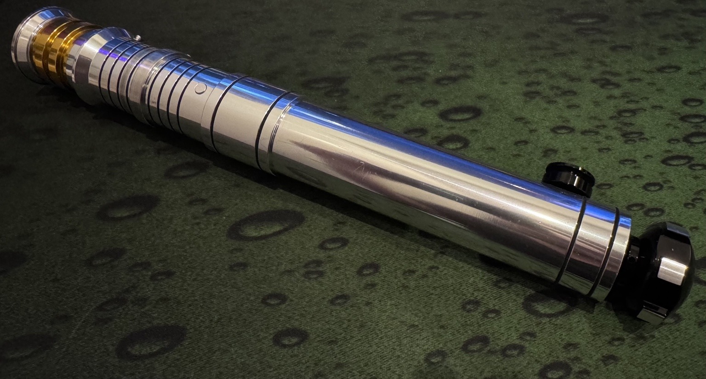

Asteria：Ultimate Works RVSを復活させる
記事の言語


BOOKOFFのジャンクコーナーで、13,000円のLEDライトセーバーを見つけた。はんだごてと多少の電子工作の経験があるので、面白い冒険になりそうだと思い、そのまま見過ごすことはできなかった。
診断、はんだ付け、Asteriaの設定に時間をかけた結果、写真の通り、完全に動作する一本として復活した。
メーカー：Ultimate Works · ヒルト：RVS (Darth Revan) · サウンドボード：Asteria V2.5
Asteria 動作動画
プレーヤーが表示されない場合は、YouTubeで動画を開く